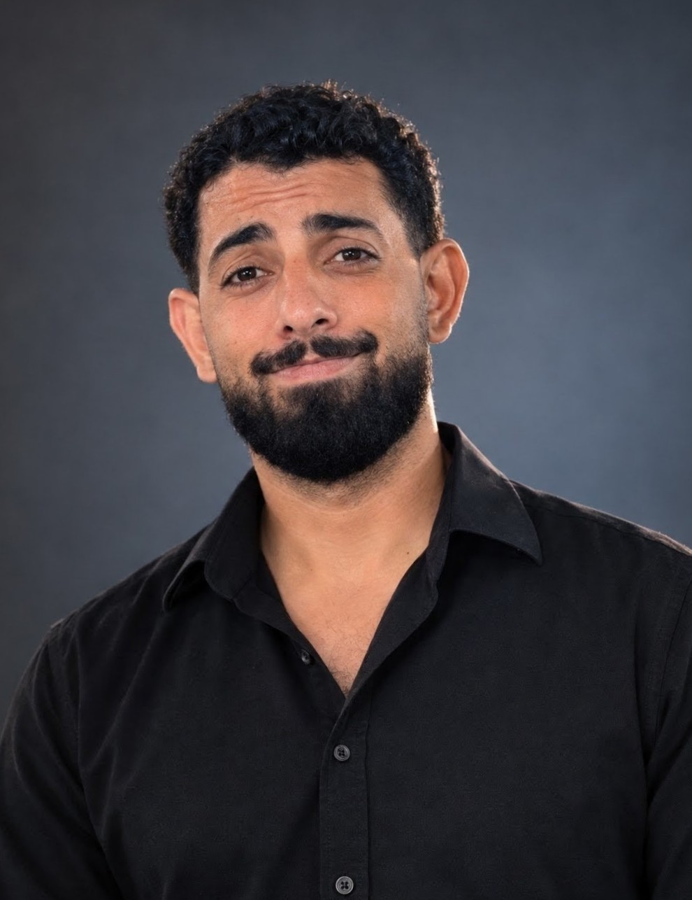

YASSINE RACHIDY
Open to visiting research positions in LLM safety & alignment
I am a PhD candidate at University Mohammed VI Polytechnic (UM6P), working on LLM robustness and alignment. I am supervised by Prof. Amal El Fallah Seghrouchni and Dr. Youssef Hmamouche.
I am currently focused on mechanistic interpretability of LLM safety mechanisms and on translating those insights into more reliable defenses.

// NEWS
- 06/2026 Strategic Deflection accepted for publication in Computational Linguistics
// PAPERS
Domain Adaptive Document Reranking for Retrieval Augmented Generation
37th International Conference on Tools with Artificial Intelligence (ICTAI), 2025